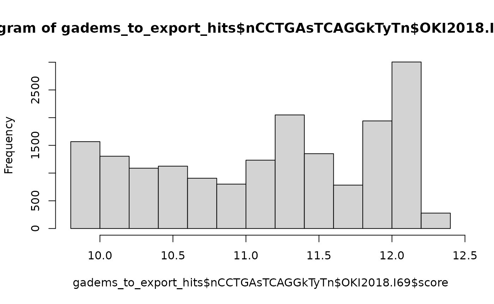
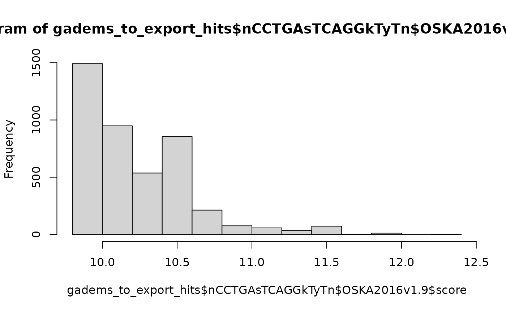
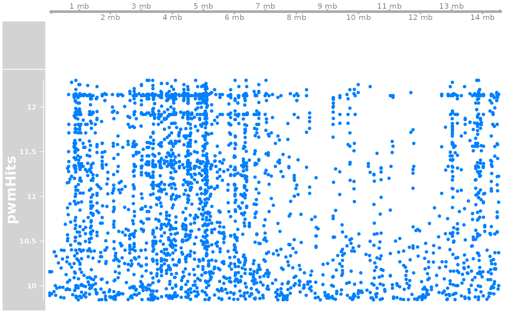
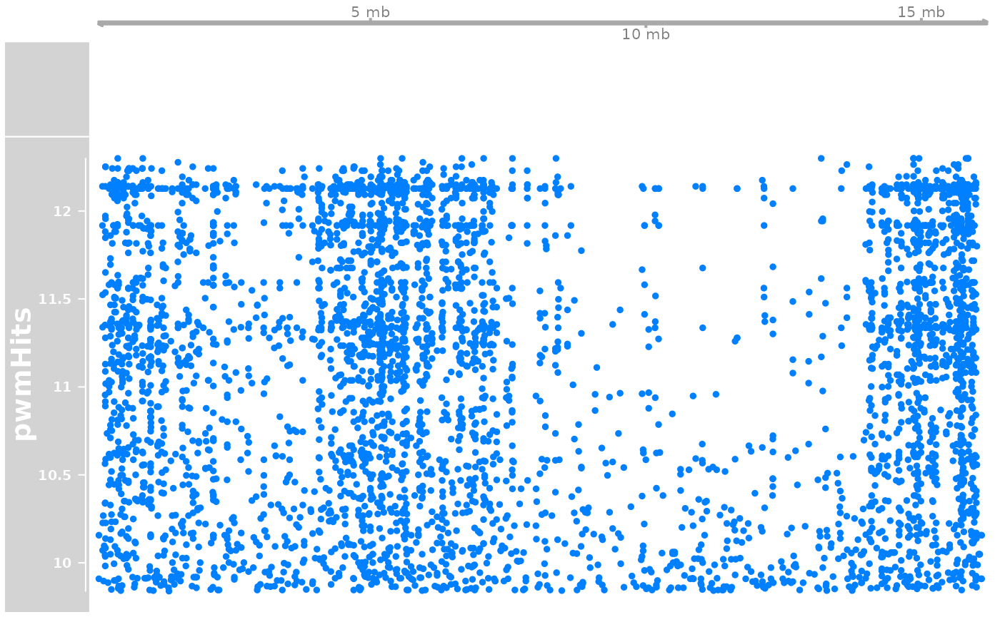
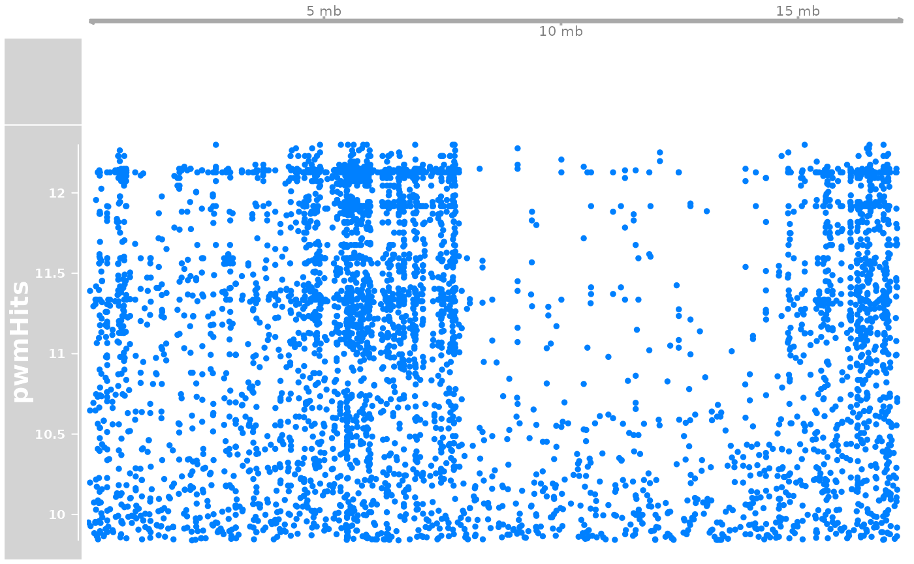

knitr::opts_chunk$set(cache = TRUE)
knitr::opts_knit$set(verbose = TRUE)Introduction
Search for motifs in regions near genomic breaks. By default the computations that take time are loaded from R objects. The source code to generate them needs to be executed by hand when needed.
Load pacakges
Core packages that provide functions we use a lot.
library('OikScrambling') |> suppressPackageStartupMessages()
(genomes <- OikScrambling:::loadAllGenomes())
(transcripts <- OikScrambling:::loadAllTranscriptsGR() |> suppressWarnings())
(load("BreakPoints.Rdata"))
library('ggplot2')
requireNamespace("ggseqlogo")## Loading required namespace: ggseqlogo
requireNamespace("JASPAR2020")## Loading required namespace: JASPAR2020
requireNamespace("rGADEM")## Loading required namespace: rGADEMGenome lengths
## Oki Osa Bar Kum Aom Nor
## 64281565 56625162 55793437 64653574 56753784 70471451
## Genome average AT content
(genomes.AT <- sapply(genomes, \(g)
weighted.mean(letterFrequency(getSeq(g), "AT", as.prob = TRUE), seqlengths(g))))## Oki Osa Bar Kum Aom Nor
## 0.5893477 0.5831737 0.6004930 0.5891578 0.5852745 0.5686432Inversions
I wanted to search search for motifs near inversions to see if they can lead to an explanation.
See vignette("Inversions", package = "OikScrambling") for details on inversion.
Isolate the left-side gaps in inversions
inv.lgaps <- sapply(coa, leftInversionGaps) |> SimpleList()
data.frame(width=width(inv.lgaps$Oki_Osa)) |>
ggplot(aes(width)) + geom_histogram() + scale_x_log10()## `stat_bin()` using `bins = 30`. Pick better value with `binwidth`.
AT richness
## Inverted regions are AT-rich as usual.
invRegions <- sapply(coa[1:15], \(gr) filterInversions(flagInversions(gr))) |> SimpleList()
invSeq <- sapply(invRegions, getGRseqs) |> SimpleList()
sapply(invSeq, \(seq) letterFrequency(seq, "AT", as.prob = TRUE) |> summary())## Oki_Osa Oki_Bar Oki_Kum
## [1,] "Min. :0.4217 " "Min. :0.4217 " "Min. :0.4304 "
## [2,] "1st Qu.:0.5444 " "1st Qu.:0.5405 " "1st Qu.:0.5619 "
## [3,] "Median :0.5741 " "Median :0.5696 " "Median :0.5890 "
## [4,] "Mean :0.5714 " "Mean :0.5666 " "Mean :0.5831 "
## [5,] "3rd Qu.:0.5999 " "3rd Qu.:0.5958 " "3rd Qu.:0.6095 "
## [6,] "Max. :0.7027 " "Max. :0.7097 " "Max. :0.7353 "
## Oki_Aom Oki_Nor Osa_Oki
## [1,] "Min. :0.4353 " "Min. :0.4217 " "Min. :0.3939 "
## [2,] "1st Qu.:0.5426 " "1st Qu.:0.5405 " "1st Qu.:0.5385 "
## [3,] "Median :0.5728 " "Median :0.5714 " "Median :0.5685 "
## [4,] "Mean :0.5702 " "Mean :0.5665 " "Mean :0.5661 "
## [5,] "3rd Qu.:0.5989 " "3rd Qu.:0.5950 " "3rd Qu.:0.5965 "
## [6,] "Max. :0.6937 " "Max. :0.7097 " "Max. :0.7073 "
## Osa_Bar Osa_Kum Osa_Aom
## [1,] "Min. :0.4958 " "Min. :0.3939 " "Min. :0.4765 "
## [2,] "1st Qu.:0.5759 " "1st Qu.:0.5385 " "1st Qu.:0.5675 "
## [3,] "Median :0.5986 " "Median :0.5690 " "Median :0.5892 "
## [4,] "Mean :0.5956 " "Mean :0.5665 " "Mean :0.5930 "
## [5,] "3rd Qu.:0.6216 " "3rd Qu.:0.5957 " "3rd Qu.:0.6174 "
## [6,] "Max. :0.6920 " "Max. :0.7252 " "Max. :0.7500 "
## Osa_Nor Bar_Oki Bar_Osa
## [1,] "Min. :0.4972 " "Min. :0.4141 " "Min. :0.5040 "
## [2,] "1st Qu.:0.5700 " "1st Qu.:0.5427 " "1st Qu.:0.5897 "
## [3,] "Median :0.5940 " "Median :0.5719 " "Median :0.6120 "
## [4,] "Mean :0.5937 " "Mean :0.5705 " "Mean :0.6118 "
## [5,] "3rd Qu.:0.6182 " "3rd Qu.:0.5997 " "3rd Qu.:0.6366 "
## [6,] "Max. :0.6920 " "Max. :0.7826 " "Max. :0.7489 "
## Bar_Kum Bar_Aom Bar_Nor
## [1,] "Min. :0.4118 " "Min. :0.5052 " "Min. :0.5385 "
## [2,] "1st Qu.:0.5447 " "1st Qu.:0.5892 " "1st Qu.:0.5946 "
## [3,] "Median :0.5746 " "Median :0.6134 " "Median :0.6254 "
## [4,] "Mean :0.5716 " "Mean :0.6118 " "Mean :0.6293 "
## [5,] "3rd Qu.:0.6000 " "3rd Qu.:0.6361 " "3rd Qu.:0.6402 "
## [6,] "Max. :0.7826 " "Max. :0.7525 " "Max. :0.7941 "
genomes.AT## Oki Osa Bar Kum Aom Nor
## 0.5893477 0.5831737 0.6004930 0.5891578 0.5852745 0.5686432
## But gaps are a bit more AT-rich.
sapply(inv.lgaps.Seq, \(seq) letterFrequency(seq, "AT", as.prob = TRUE) |> summary())## Oki_Osa Oki_Bar Oki_Kum
## [1,] "Min. :0.2000 " "Min. :0.2000 " "Min. :0.0000 "
## [2,] "1st Qu.:0.6061 " "1st Qu.:0.6106 " "1st Qu.:0.5680 "
## [3,] "Median :0.6361 " "Median :0.6402 " "Median :0.6169 "
## [4,] "Mean :0.6385 " "Mean :0.6415 " "Mean :0.6250 "
## [5,] "3rd Qu.:0.6724 " "3rd Qu.:0.6736 " "3rd Qu.:0.7225 "
## [6,] "Max. :0.9286 " "Max. :0.9333 " "Max. :1.0000 "
## Oki_Aom Oki_Nor Osa_Oki
## [1,] "Min. :0.2000 " "Min. :0.2000 " "Min. :0.2500 "
## [2,] "1st Qu.:0.6051 " "1st Qu.:0.6066 " "1st Qu.:0.6129 "
## [3,] "Median :0.6354 " "Median :0.6397 " "Median :0.6406 "
## [4,] "Mean :0.6365 " "Mean :0.6403 " "Mean :0.6462 "
## [5,] "3rd Qu.:0.6695 " "3rd Qu.:0.6732 " "3rd Qu.:0.6798 "
## [6,] "Max. :0.7962 " "Max. :0.9333 " "Max. :1.0000 "
## Osa_Bar Osa_Kum Osa_Aom
## [1,] "Min. :0.0000 " "Min. :0.2500 " "Min. :0.4000 "
## [2,] "1st Qu.:0.6155 " "1st Qu.:0.6118 " "1st Qu.:0.5850 "
## [3,] "Median :0.6596 " "Median :0.6409 " "Median :0.6300 "
## [4,] "Mean :0.6709 " "Mean :0.6464 " "Mean :0.6564 "
## [5,] "3rd Qu.:0.7197 " "3rd Qu.:0.6818 " "3rd Qu.:0.7308 "
## [6,] "Max. :1.0000 " "Max. :1.0000 " "Max. :1.0000 "
## Osa_Nor Bar_Oki Bar_Osa
## [1,] "Min. :0.0000 " "Min. :0.3721 " "Min. :0.3333 "
## [2,] "1st Qu.:0.6107 " "1st Qu.:0.6308 " "1st Qu.:0.6265 "
## [3,] "Median :0.6519 " "Median :0.6639 " "Median :0.6856 "
## [4,] "Mean :0.6614 " "Mean :0.6670 " "Mean :0.6985 "
## [5,] "3rd Qu.:0.7082 " "3rd Qu.:0.7015 " "3rd Qu.:0.7612 "
## [6,] "Max. :0.9176 " "Max. :0.9091 " "Max. :1.0000 "
## Bar_Kum Bar_Aom Bar_Nor
## [1,] "Min. :0.3721 " "Min. :0.0000 " "Min. :0.5300 "
## [2,] "1st Qu.:0.6313 " "1st Qu.:0.6258 " "1st Qu.:0.6348 "
## [3,] "Median :0.6639 " "Median :0.6818 " "Median :0.6924 "
## [4,] "Mean :0.6681 " "Mean :0.6899 " "Mean :0.7245 "
## [5,] "3rd Qu.:0.7017 " "3rd Qu.:0.7554 " "3rd Qu.:0.7850 "
## [6,] "Max. :0.9091 " "Max. :1.0000 " "Max. :1.0000 "
## This difference is significant.
t.test(letterFrequency(invSeq$Oki_Osa, "AT", as.prob = TRUE), letterFrequency(inv.lgaps.Seq$Oki_Osa, "AT", as.prob = TRUE))##
## Welch Two Sample t-test
##
## data: letterFrequency(invSeq$Oki_Osa, "AT", as.prob = TRUE) and letterFrequency(inv.lgaps.Seq$Oki_Osa, "AT", as.prob = TRUE)
## t = -23.381, df = 1198.2, p-value < 2.2e-16
## alternative hypothesis: true difference in means is not equal to 0
## 95 percent confidence interval:
## -0.07263580 -0.06138932
## sample estimates:
## mean of x mean of y
## 0.5714415 0.6384541
t.test(letterFrequency(invSeq$Osa_Oki, "AT", as.prob = TRUE), letterFrequency(inv.lgaps.Seq$Osa_Oki, "AT", as.prob = TRUE))##
## Welch Two Sample t-test
##
## data: letterFrequency(invSeq$Osa_Oki, "AT", as.prob = TRUE) and letterFrequency(inv.lgaps.Seq$Osa_Oki, "AT", as.prob = TRUE)
## t = -25.326, df = 1170, p-value < 2.2e-16
## alternative hypothesis: true difference in means is not equal to 0
## 95 percent confidence interval:
## -0.08631036 -0.07389900
## sample estimates:
## mean of x mean of y
## 0.5660921 0.6461967
t.test(letterFrequency(invSeq$Oki_Bar, "AT", as.prob = TRUE), letterFrequency(inv.lgaps.Seq$Oki_Bar, "AT", as.prob = TRUE))##
## Welch Two Sample t-test
##
## data: letterFrequency(invSeq$Oki_Bar, "AT", as.prob = TRUE) and letterFrequency(inv.lgaps.Seq$Oki_Bar, "AT", as.prob = TRUE)
## t = -27.122, df = 1246.1, p-value < 2.2e-16
## alternative hypothesis: true difference in means is not equal to 0
## 95 percent confidence interval:
## -0.08033177 -0.06949394
## sample estimates:
## mean of x mean of y
## 0.5665606 0.6414735
t.test(letterFrequency(invSeq$Oki_Kum, "AT", as.prob = TRUE), letterFrequency(inv.lgaps.Seq$Oki_Kum, "AT", as.prob = TRUE))##
## Welch Two Sample t-test
##
## data: letterFrequency(invSeq$Oki_Kum, "AT", as.prob = TRUE) and letterFrequency(inv.lgaps.Seq$Oki_Kum, "AT", as.prob = TRUE)
## t = -2.1396, df = 106.27, p-value = 0.03468
## alternative hypothesis: true difference in means is not equal to 0
## 95 percent confidence interval:
## -0.080593766 -0.003070676
## sample estimates:
## mean of x mean of y
## 0.5831486 0.6249809I was tempted to explain this difference with A/T homopolymer stetches. But de novo motif prediction with rGADEM finds AT-rich motifs in any set of Oik sequences that I have tried.
The following code is not run by the vignette because the computation takes time. Its results are saved in an external file, loaded by the vignette.
library("rGADEM")
# Slow !
# Note that GADEM crashes on sequences longer than 50 kbp.
doGadem <- function(seqs) {
bsgenome_name <- metadata(seqs)$genome
bsgenome_obj <- get(bsgenome_name)
seqs <- seqs[width(seqs) < 50000]
GADEM(seqs, verbose=1, genome=bsgenome_obj)
}
gadems.inv <- sapply(invSeq, doGadem) |> SimpleList()
gadems.invLeftGap <- sapply(inv.lgaps.Seq, doGadem) |> SimpleList()
saveRDS(gadems.invLeftGap, file = "gadems.invLeftGap.Rda")
library("rGADEM")## Loading required package: seqLogo## Loading required package: grid##
## Attaching package: 'grid'## The following object is masked from 'package:Biostrings':
##
## pattern##
## Attaching package: 'rGADEM'## The following object is masked from 'package:seqLogo':
##
## consensus
# gadems.inv <- readRDS("gadems.inv.Rda")
gadems.invLeftGap <- readRDS("gadems.invLeftGap.Rda")
gadems <- gadems.invLeftGap
for (curObjName in names(gadems)) {
for (n in seq_along(gadems[[curObjName]]@motifList)) {
gadem <- gadems[[curObjName]][[n]]
pwm <- rGADEM::getPWM(gadem)
cons <- gadem@consensus
p <- ggseqlogo::ggseqlogo(pwm) +
ggtitle(paste(curObjName, cons))
print(p)
}
}## Warning: `guides(<scale> = FALSE)` is deprecated. Please use `guides(<scale> =
## "none")` instead.
## Warning: `guides(<scale> = FALSE)` is deprecated. Please use `guides(<scale> =
## "none")` instead.
## Warning: `guides(<scale> = FALSE)` is deprecated. Please use `guides(<scale> =
## "none")` instead.
## Warning: `guides(<scale> = FALSE)` is deprecated. Please use `guides(<scale> =
## "none")` instead.
## Warning: `guides(<scale> = FALSE)` is deprecated. Please use `guides(<scale> =
## "none")` instead.
## Warning: `guides(<scale> = FALSE)` is deprecated. Please use `guides(<scale> =
## "none")` instead.
## Warning: `guides(<scale> = FALSE)` is deprecated. Please use `guides(<scale> =
## "none")` instead.
## Warning: `guides(<scale> = FALSE)` is deprecated. Please use `guides(<scale> =
## "none")` instead.
## Warning: `guides(<scale> = FALSE)` is deprecated. Please use `guides(<scale> =
## "none")` instead.
## Warning: `guides(<scale> = FALSE)` is deprecated. Please use `guides(<scale> =
## "none")` instead.
## Warning: `guides(<scale> = FALSE)` is deprecated. Please use `guides(<scale> =
## "none")` instead.
## Warning: `guides(<scale> = FALSE)` is deprecated. Please use `guides(<scale> =
## "none")` instead.
## Warning: `guides(<scale> = FALSE)` is deprecated. Please use `guides(<scale> =
## "none")` instead.
## Warning: `guides(<scale> = FALSE)` is deprecated. Please use `guides(<scale> =
## "none")` instead.
## Warning: `guides(<scale> = FALSE)` is deprecated. Please use `guides(<scale> =
## "none")` instead.
## Warning: `guides(<scale> = FALSE)` is deprecated. Please use `guides(<scale> =
## "none")` instead.
## Warning: `guides(<scale> = FALSE)` is deprecated. Please use `guides(<scale> =
## "none")` instead.
## Warning: `guides(<scale> = FALSE)` is deprecated. Please use `guides(<scale> =
## "none")` instead.
## Warning: `guides(<scale> = FALSE)` is deprecated. Please use `guides(<scale> =
## "none")` instead.
## Warning: `guides(<scale> = FALSE)` is deprecated. Please use `guides(<scale> =
## "none")` instead.
## Warning: `guides(<scale> = FALSE)` is deprecated. Please use `guides(<scale> =
## "none")` instead.
## Warning: `guides(<scale> = FALSE)` is deprecated. Please use `guides(<scale> =
## "none")` instead.
## Warning: `guides(<scale> = FALSE)` is deprecated. Please use `guides(<scale> =
## "none")` instead.
## Warning: `guides(<scale> = FALSE)` is deprecated. Please use `guides(<scale> =
## "none")` instead.
## Warning: `guides(<scale> = FALSE)` is deprecated. Please use `guides(<scale> =
## "none")` instead.
## Warning: `guides(<scale> = FALSE)` is deprecated. Please use `guides(<scale> =
## "none")` instead.
## Warning: `guides(<scale> = FALSE)` is deprecated. Please use `guides(<scale> =
## "none")` instead.
## Warning: `guides(<scale> = FALSE)` is deprecated. Please use `guides(<scale> =
## "none")` instead.
## Warning: `guides(<scale> = FALSE)` is deprecated. Please use `guides(<scale> =
## "none")` instead.
## Warning: `guides(<scale> = FALSE)` is deprecated. Please use `guides(<scale> =
## "none")` instead.
## Warning: `guides(<scale> = FALSE)` is deprecated. Please use `guides(<scale> =
## "none")` instead.
## Warning: `guides(<scale> = FALSE)` is deprecated. Please use `guides(<scale> =
## "none")` instead.
## Warning: `guides(<scale> = FALSE)` is deprecated. Please use `guides(<scale> =
## "none")` instead.
## Warning: `guides(<scale> = FALSE)` is deprecated. Please use `guides(<scale> =
## "none")` instead.
## Warning: `guides(<scale> = FALSE)` is deprecated. Please use `guides(<scale> =
## "none")` instead.
## Warning: `guides(<scale> = FALSE)` is deprecated. Please use `guides(<scale> =
## "none")` instead.
## Warning: `guides(<scale> = FALSE)` is deprecated. Please use `guides(<scale> =
## "none")` instead.
## Warning: `guides(<scale> = FALSE)` is deprecated. Please use `guides(<scale> =
## "none")` instead.
## Warning: `guides(<scale> = FALSE)` is deprecated. Please use `guides(<scale> =
## "none")` instead.
## Warning: `guides(<scale> = FALSE)` is deprecated. Please use `guides(<scale> =
## "none")` instead.
## Warning: `guides(<scale> = FALSE)` is deprecated. Please use `guides(<scale> =
## "none")` instead.
## Warning: `guides(<scale> = FALSE)` is deprecated. Please use `guides(<scale> =
## "none")` instead.
## Warning: `guides(<scale> = FALSE)` is deprecated. Please use `guides(<scale> =
## "none")` instead.
## Warning: `guides(<scale> = FALSE)` is deprecated. Please use `guides(<scale> =
## "none")` instead.
## Warning: `guides(<scale> = FALSE)` is deprecated. Please use `guides(<scale> =
## "none")` instead.
## Warning: `guides(<scale> = FALSE)` is deprecated. Please use `guides(<scale> =
## "none")` instead.
## Warning: `guides(<scale> = FALSE)` is deprecated. Please use `guides(<scale> =
## "none")` instead.
## Warning: `guides(<scale> = FALSE)` is deprecated. Please use `guides(<scale> =
## "none")` instead.
## Warning: `guides(<scale> = FALSE)` is deprecated. Please use `guides(<scale> =
## "none")` instead.
## Warning: `guides(<scale> = FALSE)` is deprecated. Please use `guides(<scale> =
## "none")` instead.
## Warning: `guides(<scale> = FALSE)` is deprecated. Please use `guides(<scale> =
## "none")` instead.
## Warning: `guides(<scale> = FALSE)` is deprecated. Please use `guides(<scale> =
## "none")` instead.
## Warning: `guides(<scale> = FALSE)` is deprecated. Please use `guides(<scale> =
## "none")` instead.
## Warning: `guides(<scale> = FALSE)` is deprecated. Please use `guides(<scale> =
## "none")` instead.
## Warning: `guides(<scale> = FALSE)` is deprecated. Please use `guides(<scale> =
## "none")` instead.
## Warning: `guides(<scale> = FALSE)` is deprecated. Please use `guides(<scale> =
## "none")` instead.
## Warning: `guides(<scale> = FALSE)` is deprecated. Please use `guides(<scale> =
## "none")` instead.
## Warning: `guides(<scale> = FALSE)` is deprecated. Please use `guides(<scale> =
## "none")` instead.
## Warning: `guides(<scale> = FALSE)` is deprecated. Please use `guides(<scale> =
## "none")` instead.
## Warning: `guides(<scale> = FALSE)` is deprecated. Please use `guides(<scale> =
## "none")` instead.
## Warning: `guides(<scale> = FALSE)` is deprecated. Please use `guides(<scale> =
## "none")` instead.
## Warning: `guides(<scale> = FALSE)` is deprecated. Please use `guides(<scale> =
## "none")` instead.
## Warning: `guides(<scale> = FALSE)` is deprecated. Please use `guides(<scale> =
## "none")` instead.
## Warning: `guides(<scale> = FALSE)` is deprecated. Please use `guides(<scale> =
## "none")` instead.
## Warning: `guides(<scale> = FALSE)` is deprecated. Please use `guides(<scale> =
## "none")` instead.
## Warning: `guides(<scale> = FALSE)` is deprecated. Please use `guides(<scale> =
## "none")` instead.
## Warning: `guides(<scale> = FALSE)` is deprecated. Please use `guides(<scale> =
## "none")` instead.
## Warning: `guides(<scale> = FALSE)` is deprecated. Please use `guides(<scale> =
## "none")` instead.

#RGadem positive control: check introns ?
# set.seed(1664)
# intr <- sample(intronicParts(tx_OKI), 1000)
# intr <- BSgenome::getSeq(OKI2018_I69, intr)
# gadem <- GADEM(intr, verbose=1, genome=OKI2018_I69)
# > consensus(gadem)
# [1] "nAAAAwnnwnAAAwn"
# Also found motifs like rryCAATTbwTkCGmAkyT
#RGadem positive control: check promoters ?
# set.seed(1664)
# prom <- sample(promoters(tx_OKI), 1000)
# prom <- BSgenome::getSeq(OKI2018_I69, prom)
# gadem <- GADEM(prom, verbose=1, genome=OKI2018_I69)
# consensus(gadem)
# [1] "nAAAAwwnwnnAAAAwn" "nTTTTCTTyn"
# Also found motifs like TTTmAAAAA palindromic (rAAGCsGCwwmkCGrCTTyn) motif is found in the left gaps.
Or could it be GCCGCnnnGCGGC ? Its frequency in genomes is something like:
Oki Osa Bar Kum Aom Nor
10827 2273 1967 10880 2210 2247 On the other hand, a motif containing GCGAAGCGAA identified in Osa_Oki shows:
Oki Osa Bar Kum Aom Nor
483 21360 23340 501 21594 16413
checkJaspar <- function (pwm) {
#---- see https://compgenomr.github.io/book/motif-discovery.html
pwmLib <- TFBSTools::getMatrixSet(
JASPAR2020::JASPAR2020,
opts = list(
collection = 'CORE',
# species = 'Homo sapiens',
matrixtype = 'PWM'))
pwm_sim <- TFBSTools::PWMSimilarity( pwmLib, PWMat, method = 'Pearson')
pwmLibDf <- data.frame(
ID = sapply(pwmLib, TFBSTools::ID),
name = sapply(pwmLib, TFBSTools::name),
row.names = seq_along(pwmLib)
)
pwmLibDf$similarity <- pwm_sim[pwmLibDf$ID]
pwmLibDf[order(-pwmLibDf$similarity),]
}
PWMat <- TFBSTools::PWMatrix(ID="rAAGCsGCwwmkCGrCTTyn", profileMatrix = pwm)
pwm_res <- checkJaspar(PWMat)
head(pwm_res)## ID name similarity
## 168 MA0260.1 che-1 0.5541413
## 29 MA0064.1 PBF 0.5460773
## 792 MA0945.1 ARR1 0.5347363
## 1420 MA0205.2 Trl 0.5296409
## 25 MA0053.1 MNB1A 0.5292977
## 307 MA0401.1 SWI4 0.5205265
pwmhalf <- pwm[,2:8]
pwmhalf_res <- checkJaspar(PWMatrix(ID="AAGCnGC", profileMatrix = pwmhalf))
head(pwmhalf_res)## ID name similarity
## 168 MA0260.1 che-1 0.5541413
## 29 MA0064.1 PBF 0.5460773
## 792 MA0945.1 ARR1 0.5347363
## 1420 MA0205.2 Trl 0.5296409
## 25 MA0053.1 MNB1A 0.5292977
## 307 MA0401.1 SWI4 0.5205265But a search in Jaspar with either the full motif or its halof did not reveal strong hits. Visual inspection of PRDM9 sequence logos via Google did not show similarity either.
Export rAAGCsGCwwmkCGrCTTyn alignments to a file
# gademHitsToBS <- function(gadem, n) {
# alignList <- gadem[[n]]@alignList
# pwmSeqs <- sapply(alignList, function(align) align@seq)
# Biostrings::DNAStringSet(pwmSeqs)
# }
#
# pwmSeqs <- gademHitsToBS(gadem, 1)
# writeXStringSet(pwmBS, file="firstGapsGADEMpwm.fasta")# writeXStringSet(lgapsSeq_Oki_O, file="firstGaps.fasta")
# I used this FASTA export to search for motifs with GLAM2, and it also
# returned A/T polymers.The GLAM2 motif finder was run on this file, and then to screen the genome. Hits coordinates were encoded in a BED file uploaded to the ZENBU genome browser. Visual inspection gave me the impression that the motif might be related to repeats.
GLAM2 search of the gap sequences did not return a motif similar to “AAGCsGCwwmkCGrCTTyn”.
Whole-genome search of the motif
Disappointingly, the motif is found equally in gaps and inversions when searched with its PWM.
# No exact match
vmatchPattern("rAAGCsGCwwmkCGrCTTyn", OKI2018_I69)## GRanges object with 0 ranges and 0 metadata columns:
## seqnames ranges strand
## <Rle> <IRanges> <Rle>
## -------
## seqinfo: 19 sequences from OKI2018_I69 genome
pwm <- rGADEM::getPWM(gadems.invLeftGap$Oki_Osa[[1]])
gadems.invLeftGap$Oki_Osa[[1]]@consensus## [1] "rArAAGCCGCdwAGCsGCw"## Oki Osa Bar Kum Aom Nor
## 10571 2056 1808 10654 2007 2101
hist(pwmHits$Oki$score)
hist(pwmHits$Osa$score)
pwmHit <- pwmHits$Oki
library("Gviz")
options(ucscChromosomeNames=FALSE)
gen <- GenomeAxisTrack(name = "genome")
a <- AnnotationTrack(longShort$Oki, chromosome = "chr1")
trk <- DataTrack(pwmHit |> (\(.){strand(.)<-"*";.})(), name = "pwmHits", chromosome = "chr1")
plotTracks(list(gen, a, trk))
a <- AnnotationTrack(longShort$Oki, chromosome = "chr2")
trk <- DataTrack(pwmHit |> (\(.){strand(.)<-"*";.})(), name = "pwmHits", chromosome = "chr2")
plotTracks(list(gen, a, trk))
a <- AnnotationTrack(longShort$Oki, chromosome = "PAR")
trk <- DataTrack(pwmHit |> (\(.){strand(.)<-"*";.})(), name = "pwmHits", chromosome = "PAR")
plotTracks(list(gen, a, trk))
a <- AnnotationTrack(longShort$Oki, chromosome = "XSR")
trk <- DataTrack(pwmHit |> (\(.){strand(.)<-"*";.})(), name = "pwmHits", chromosome = "XSR")
plotTracks(list(gen, a, trk))
length(subsetByOverlaps(pwmHits$Oki, inv.lgaps$Oki_Osa))## [1] 249
length(subsetByOverlaps(pwmHits$Oki, invRegions$Oki_Osa))## [1] 92
hist(score(subsetByOverlaps(pwmHits$Oki, inv.lgaps$Oki_Osa)))
hist(score(subsetByOverlaps(pwmHits$Oki, invRegions$Oki_Osa)))
# Scores in gaps are higher than average.
t.test(score(pwmHits$Oki), score(subsetByOverlaps(pwmHits$Oki, inv.lgaps$Oki_Osa)))##
## Welch Two Sample t-test
##
## data: score(pwmHits$Oki) and score(subsetByOverlaps(pwmHits$Oki, inv.lgaps$Oki_Osa))
## t = -5.4627, df = 261.75, p-value = 1.091e-07
## alternative hypothesis: true difference in means is not equal to 0
## 95 percent confidence interval:
## -0.3139222 -0.1475739
## sample estimates:
## mean of x mean of y
## 11.24154 11.47229
# Scores in gaps and inversions are not different
t.test(score(subsetByOverlaps(pwmHits$Oki, invRegions$Oki_Osa)), score(subsetByOverlaps(pwmHits$Oki, inv.lgaps$Oki_Osa)))##
## Welch Two Sample t-test
##
## data: score(subsetByOverlaps(pwmHits$Oki, invRegions$Oki_Osa)) and score(subsetByOverlaps(pwmHits$Oki, inv.lgaps$Oki_Osa))
## t = 0.12756, df = 175.27, p-value = 0.8986
## alternative hypothesis: true difference in means is not equal to 0
## 95 percent confidence interval:
## -0.1397046 0.1590111
## sample estimates:
## mean of x mean of y
## 11.48195 11.47229
# rtracklayer::export.bed(pwmHits, "AAGCsGCwwmkCGrCTTyn.bed")
# PWM hits seem to be more abundant on short arms.
#OKI_longShort$pwmHitsPerMb <- countOverlaps(OKI_longShort, pwmHits$Oki) / width(OKI_longShort) * 1e6
# But with a naive approach the difference is not statistically significant.
t.test(c(159, 185, 188), c(77, 142, 160))##
## Welch Two Sample t-test
##
## data: c(159, 185, 188) and c(77, 142, 160)
## t = 1.9004, df = 2.5243, p-value = 0.1707
## alternative hypothesis: true difference in means is not equal to 0
## 95 percent confidence interval:
## -44.27463 146.27463
## sample estimates:
## mean of x mean of y
## 177.3333 126.3333